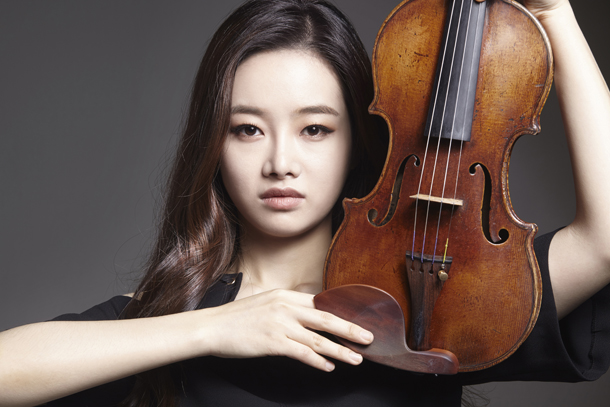

As a violinist, Bomsori has won prizes at ten international violin competitions, including the Tchaikovsky,[6] Queen Elisabeth,[7] ARD,[8] Sibelius,[9] Montreal,[10] Sendai,[11] Wieniawski,[12] Joachim,[13] China (Qingdao),[14] and Schoenfeld.[15] She has recorded for the major record labels such as Deutsche Grammophon[2] and Warner Classics.[1] She currently plays on the 1774 J.B. Guadagnini Turin, generously on loan to her from Kumho Asiana Cultural Foundation.[16]
[a] The violin typically has four strings (some can have five), usually tuned in perfect fifths with notes G3, D4, A4, E5, and is most commonly played by drawing a bow across its strings.
It can also be played by plucking the strings with the fingers (pizzicato) and, in specialized cases, by striking the strings with the wooden side of the bow (col legno).